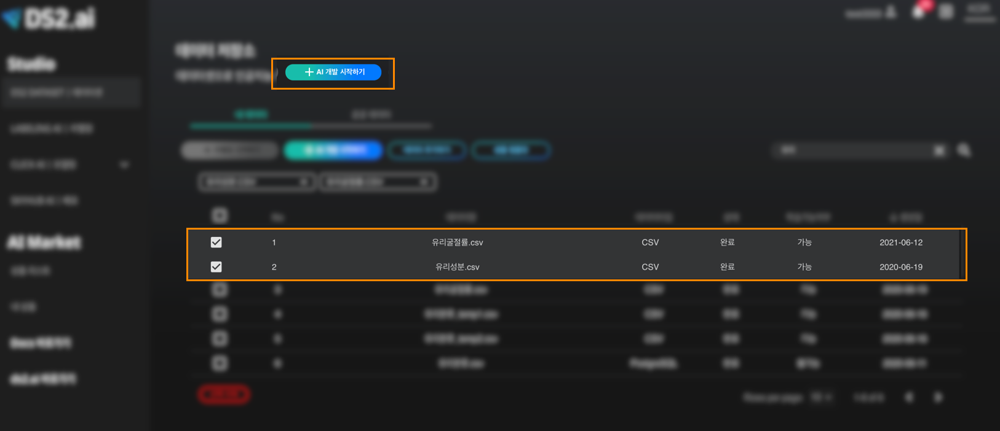

학습 데이터 결합
하나의 데이터 파일안에 우리가 원하는 모든 정보를 가지고 있을 때, 인공지능 학습을 하기에는 더할나위 없이 최고의 상황입니다. 하지만 하나의 데이터 파일로는 정보가 부족할 때 혹은 다른 추가적인 데이터가 필요할 때, 우리는 더 높은 신뢰도 혹은 정확도를 가진 인공지능을 위해서 필연적으로 두 개 이상의 데이터를 결합해야 합니다. 일반적으로 프로그래밍을 이용하거나 엑셀을 통해 할 수 있지만, 프로그래밍의 경우 이에 대한 전문적인 지식이 있어야 한다는 전제가 있고 또한, 엑셀을 이용한 작업은 시간적 비용이 많이 드는 노동입니다.
DS2 Dataset에서는 언급된 두 가지 방법을 대신해서 클릭만으로 데이터를 쉽게 결합하는 방법을 제공하며, 데이터 결합은 텍스트 기반의 인공지능 모델에 한해서 적용됩니다.
데이터 결합 예시

학습 목표 - 두 가지의 데이터셋을 이용해서 데이터결합 후 인공지능 학습
학습 자료 - 유리굴절률.csv, 유리성분.csv
유리굴절률.csv
유리성분.csv
위의 두 데이터셋을 살펴보면 서로 다른 데이터를 가지고 있습니다.
[ 유리성분.csv의 경우, 각 id값을 가진 유리 마다 성분들이 정리되어 있습니다. ]
[ 유리굴절률.csv의 경우, 각 id값을 가진 유리마다 굴절률과 유리의 종류가 카테고리화되어 1부터 7까지의 숫자로 표기되어 있습니다. ]
유리의 종류를 구분 짓기 위해서는 유리의 굴절률 뿐만 아니라 유리가 가진 성분들이 유리의 종류를 구분 짓는 데 중요한 역할을 합니다. 그렇기 때문에, 위 두 데이터를 결합 할 필요가 있습니다.
1. 데이터 업로드
유리굴절률.csv 파일과 유리성분.csv 파일을 업로드 합니다. 업로드 방법은 학습 데이터 연동 을 참고해주세요 .
2. 데이터 결합

[ 업로드한 두 데이터를 클릭하고, AI개발 시작하기를 클릭합니다. ]
3. 인공지능 개발을 위한 전처리

카테고리 별로 나뉘어진 유리의 종류를 예측하는 것이기 때문에, 학습형태는 정형 데이터 카테고리 분류를 선택합니다.

선호하는 방식은 2가지로 나뉘어져 있으며, '정확도가 높게' 방식을 선택하겠습니다.

최종적으로 예측하고자 하는 값은 유리굴절률.csv 파일에 있는 유리 종류이기 때문에, '유리 종류 - 유리굴절률.csv'를 선택합니다.

분석/예측하고 싶은 값을 선택하고 나면, 연동하기가 생성됩니다. 연동하기를 하기 위해서, '연동하기1' 혹은 '연동정보1'을 클릭합니다.
두 데이터가 공통적으로 가지고 있는 데이터는 id 값이기 때문에, 각 데이터셋별로 id를 클릭합니다.
연동작업이 끝났습니다! 이제 오른쪽 상단의 START 버튼을 클릭하여 인공지능 모델을 생성할 수 있습니다.

START 버튼을 클릭하면, 모델 생성이 시작되며, 모델생성의 진행사항을 확인할 수 있습니다.